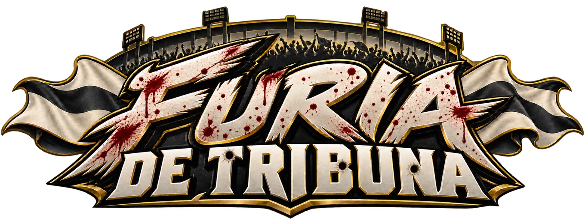

Controles
Pelea
WASDMoverse(también con las flechas)
JPiña
KPatada
LPoder especial(con la barra de poder completa)
Partida y audio
PPausa / seguir
MMúsica sí / no
−+Bajar / subir el volumen de la música
EscIr al menú de niveles(desde el menú: volver a elegir referente)
Más controles
Combinaciones
J+atrásDefensa: mantené piña y la dirección contraria a la que mirás
pegadoAgarre: caminá contra un rival de frente, bien pegado, y lo agarrás solo
J→JEn el agarre: piña y, enseguida, cabezazo que lo tira
JJJCombo: el 3.º golpe seguido sale con la derecha y pega un 10 % más (también con K)
JJunto a la damajuana (River) o la hamburguesa (Racing), el fernet con coca (Independiente), el choripán (Boca) o el vino de cartón (San Lorenzo): la levantás y recuperás la vida
Menús
←→Barras: elegir · Enter confirmar
ADReferente: cambiar · J o Enter elegir
1…0Menú de niveles: entrar directo a un nivel · Enter campaña completa
Barras VS Hooligans - México 86
Cómo jugar
Elegí tu barra, seleccioná tu referente, elegí el escenario y empezá a pelear contra la barra rival. Con San Lorenzo elegís si enfrentás a Boca o a River; su referente es El Chivo.
Poder especial
La barra de poder se llena derrotando rivales. Cuando esté completa, presioná L para activarlo.
Recuperación
Cuando te queda el 25 % de vida o menos aparece una damajuana (River) o una hamburguesa de cancha (Racing), un fernet con coca en botella cortada (Independiente), un choripán (Boca) o un vino de cartón (San Lorenzo y Newell's); Morón usa la damajuana y Chicago el choripán. Tenés 10 segundos para llegar antes de que desaparezca: acercate y presioná J para recogerla y recuperar toda la vida. La pausa frena el tiempo.
Combate
Las piñas hacen más daño que las patadas. Combiná tus ataques y cuidá tu defensa.
TODAVÍA NO DISPONIBLE
Esta barra todavía está en desarrollo. Próximamente.